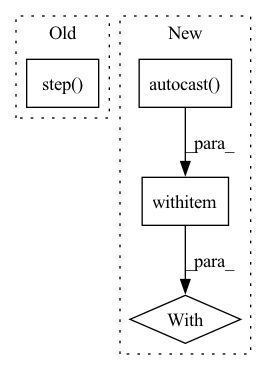

Pattern ID :3517
Before Change
// updata the model
optimizer.zero_grad()
loss.backward()
optimizer.step()
// log
if (i + 1) % log_batch_interval == 0:
logger.info(After Change
features = features.float().to(device) // (B,T,F)
targets = targets.long().to(device)
with torch .cuda.amp.autocast(enabled=enable_amp):
outputs = model(features) // (embed_a,embed_b) in most cases
embeds = outputs[-1] if isinstance(outputs, tuple) else outputs
outputs = model.module.projection(embeds, targets)
In pattern: SUPERPATTERN
Frequency: 4
Non-data size: 4
Instances Fragment ID: 13475837
Project Name: wenet-e2e/wespeaker
Commit Name: 80e5c79b304005c55cafe7ebd7e7ca7682c9191d
Time: 2022-11-22
Author: chenzhengyang117@gmail.com
File Name: wespeaker/utils/executor.py
M Class Name: AnonimousClass
N Class Name: AnonimousClass
M Method Name: run_epoch(13)
N Method Name: run_epoch(11)
M Parent Class:
N Parent Class:
M File Name: wespeaker/utils/executor.py
N File Name: wespeaker/utils/executor.py
M Start Line: 57
M End Line: 70
N Start Line: 32
N End Line: 76
Before Change
)
loss.backward(retain_graph=True)
opt_discriminator.step()
if opt_attribute_discriminator is not None:
opt_attribute_discriminator.zero_grad()
// Exclude features (last element of batches) forAfter Change
opt_attribute_discriminator.zero_grad(set_to_none=False)
// Exclude features (last element of batches) for
// attribute discriminator
with torch .cuda.amp.autocast(
enabled=self.config.mixed_precision_training
):
generated_output = self._discriminate_attributes(
generated_batch[:-1]
)
real_output = self._discriminate_attributes(real_batch[:-1]) Fragment ID: 13475836
Project Name: gretelai/gretel-synthetics
Commit Name: 6e6bbfc93aa69a7ea98907eb2e8e7dcc8350fbc7
Time: 2022-06-23
Author: santhoshsubramanian101@gmail.com
File Name: src/gretel_synthetics/timeseries_dgan/dgan.py
M Class Name: DGAN
N Class Name: DGAN
M Method Name: _train(2)
N Method Name: _train(2)
M Parent Class:
N Parent Class:
M File Name: src/gretel_synthetics/timeseries_dgan/dgan.py
N File Name: src/gretel_synthetics/timeseries_dgan/dgan.py
M Start Line: 535
M End Line: 646
N Start Line: 543
N End Line: 676
Before Change
if n == "bias":
p.grad.mul_(module.weight_mask[:, 0, 0, 0])
optimizer.step()
scheduler.step()
// Test
model.eval()After Change
optimizer = SGD(model.parameters(), lr=0.1, weight_decay=1e-4)
scheduler = CosineAnnealingLR(optimizer, train_iteration, 1e-3, last_epoch=i-1)
with torch .cuda.amp.autocast():
start = time.time()
output = model(images)
forward_time = time.time() - start
Fragment ID: 13475839
Project Name: eidoslab/simplify
Commit Name: 8c1cf93f9a2545c52c01379b934939040a76cc77
Time: 2021-07-01
Author: carlo.alberto.barbano@outlook.com
File Name: training/train.py
M Class Name: AnonimousClass
N Class Name: AnonimousClass
M Method Name: main(1)
N Method Name: main(1)
M Parent Class:
N Parent Class:
M File Name: training/train.py
N File Name: training/train.py
M Start Line: 55
M End Line: 112
N Start Line: 55
N End Line: 116
Before Change
loss = seg_loss(pred, labels) + 0.4 * seg_loss(aux, labels)
loss.backward()
optimizer.step()
print(
f"epoch = {epoch:2d}, iter = {i_iter:6d}/{args.num_epochs * len(trainloader.dataset):6d}, {i_iter/(args.num_epochs * len(trainloader.dataset)):2.2%}, loss_seg = {loss:.3f}, lr = {lr:.6f}")
After Change
lr = adjust_learning_rate(
args, optimizer, i_iter, args.num_epochs * len(trainloader.dataset))
with torch .cuda.amp.autocast():
images = images.cuda()
labels = labels.cuda()
aux, pred = model(images)
Fragment ID: 13475841
Project Name: smhassanerfani/atlantis
Commit Name: 35a88733c2d4ab90e1ab4a38c2b07faa89eb1d50
Time: 2021-09-13
Author: serfani@email.sc.edu
File Name: train.py
M Class Name: AnonimousClass
N Class Name: AnonimousClass
M Method Name: main(0)
N Method Name: main(0)
M Parent Class:
N Parent Class:
M File Name: train.py
N File Name: train.py
M Start Line: 111
M End Line: 138
N Start Line: 111
N End Line: 146